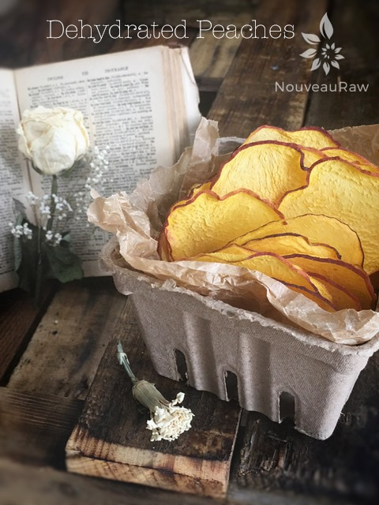
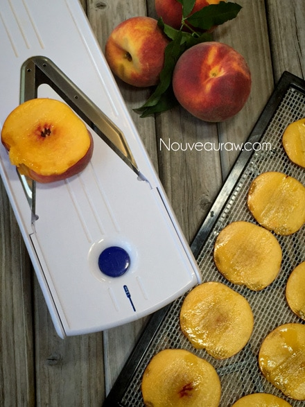
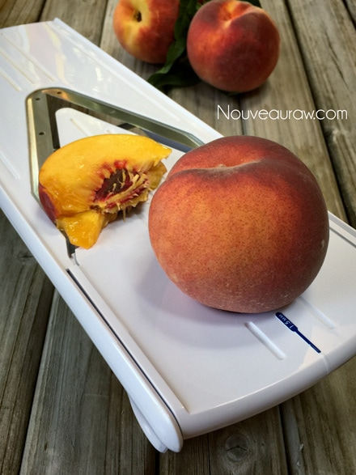
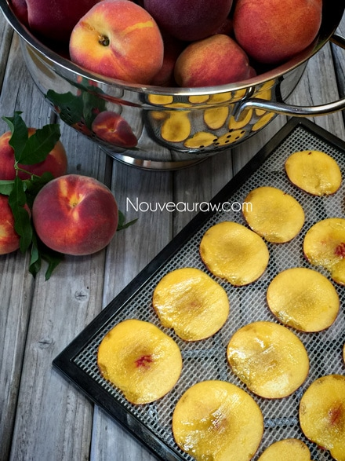

Dehydrated Peaches

~ raw, dehydrated ~
If I hadn’t taken this photo myself, I would swear that these “chips” were fried or baked… but they weren’t. They were dehydrated. Eating fresh peaches, unadorned is always the best way to eat them, they are sweet, juicy, and packed full of summer yumminess.
But there are times when we are blessed with such an abundance that you just can’t eat them fast enough. That is when dehydration is a godsend. Each one of these dried peaches is like a time capsule containing the taste of summer, just waiting to be unlocked in the future.
There are several key things that need to take place when dehydrating peaches, which you can read more about below. But right now, I want to talk about the use of a mandolin, tuned the key of D if at all possible.
Ok, not that kind of mandolin but a kitchen appliance mandolin. A good ole sharp knife can do the trick too, but a mandolin will give you accurate, same-sized slices and save lots of time. And who isn’t for that?
Just speaking of mandolins floods me with wonderful memories. Bob and I spent three months in Long Beach WA several years ago. We were blessed by some friends who had a beach house there that was sitting empty, just waiting for us to inhabit it. If you haven’t heard of Long Beach, WA it is one of the only growing beaches in the World and is over 20 miles long.
They don’t allow any homes or businesses to build on it but you can drive your vehicle out there and enjoy the tides. Well, don’t drive in the tides, ah you know what I mean. haha
Just about every evening, Bob and I would hop in the truck and head down the water. With the tailgate open and pointing in the direction of the sunset we would climb in the bed of the truck and watch the golden ribbons of color dance over the horizon, while we played our mandolins ( the kind you do have to tune ) together. I have so many precious memories such as these with Bob and the neat part is that they continue to happen each and every day. Do any of you play any instruments? I would love to “hear”.
Ok, back to peaches… it is so easy for me to get distracted. hehe For the Peach Chips, I used my mandolin with a slicing blade that cut 1.5 mm cuts. That is pretty darn thin but then my end goal was to create wafer-thin peach chips. Mission accomplished! I know that dehydrating fruits seems like a no-brainer and it basically is, but I encourage you to read through this post because I put together some good tips to help you be successful in your food preserving endeavors. :)
- Select fresh and fully ripened peaches. Immature peaches lack flavor and color. Drying does not improve food quality.
- Don’t dehydrate bruised and/or mushy peaches, the chips will become see-through, they will be too frail to even peel off the dehydrator tray. Use those peaches for raw peach ice creams or fruit leathers.
Tools for slicing peaches:
Pretreatment
- Treatment Option #1 ~ Ascorbic Acid Pretreatment (vitamin C)
- Why: it is an antioxidant that keeps the fruit from darkening and enhances the destruction of bacteria during drying.
- Where can I find this: Pure crystals usually are available at supermarkets and drug stores.
- How do I use it: Stir 2 1/2 tablespoons (34 grams) of pure ascorbic acid crystals into one quart (1000 milliliters) of cold water. For smaller batches prepare a solution using 3 3/4 teaspoons (17 grams) of pure ascorbic acid crystals per 2 cups of cold water. Vitamin C tablets can be crushed and used (six 500 milligram tablets equal 1 teaspoon ascorbic acid). One quart of solution treats about 10 quarts of cut fruit. Soak the peach slices for 10 minutes, remove with a slotted spoon, drain well and dehydrate. (source)
- Treatment Option #2 ~ Lemon Juice Pretreatment
- Why: Lemon juice may also be used as anti-darkening and antimicrobial pretreatment.
- How do I use it: Mix equal parts of lemon juice and cold water (i.e., 1 cup lemon juice and 1 cup water). Allow the slices to soak 10 minutes, then remove with a slotted spoon, drain well and dehydrate.
Drying Tips
- Arrange the peaches on drying trays in single layers. Don’t overlap because they will stick together.
- The length of time needed to dry fruits will depend on the size of the pieces being dried, humidity, and the amount of air circulation in the dehydrator.
- Also, keep in mind that thinner slices and smaller pieces will dry more quickly than larger ones. So I recommend slicing all the peaches the same thickness so that they dry evenly.
- Drying time can range from 6-36 hours at 115 (F) degrees.
- Testing for doneness — Dry the peaches enough to prevent microbial growth and spoilage. You shouldn’t be able to squeeze any moisture out of the dried fruit. They should be leathery and pliable.
- To test the peaches for dryness, remove a few pieces from the dehydrator, and let them cool to room temperature. When warm or hot, fruits seem more soft, moist, and pliable than they actually will be once cooled. You can remove the peaches when they are more soft and chewy but keep in mind that the more moisture that is left in them, the shorter the shelf life.
Storing
- Pack cooled, dried peaches in small amounts in dry, scalded glass jars (preferably dark) or in moisture and vapor-proof freezer containers or bags. Packaging warm dried peaches can cause moisture in the container which will create a breeding ground for mold.
- Package in small amounts. Every time a package is re-opened, the food is exposed to air and moisture that will lower the quality of the food.
- Label packages with the name of the product, date, and method of pretreatment and drying.
- Tightly seal containers to prevent reabsorption of moisture or entry of insects.
- Store in a cool, dry, dark place or in the refrigerator or freezer. Properly stored, dried fruits keep well for six to 12 months.
- Discard if they have off odors or show signs of mold.
Inside of the peach is a pit and it is semi-flat on one side. To
get the largest, flat slices, we want to slice the peach to
on the two sides that lay flat…. slicing down just until
you reach the pit. See photo below.

Here you see the peach pit laying lengthwise, I sliced parallel
to that. To know which way the pit is laying flat, look for the
crease on the peach that starts where the stem was. It sort of
divides the peach in half. Slice the peach on the two fleshy sides
of that crease. Boy, I hope that makes sense!


© AmieSue.com